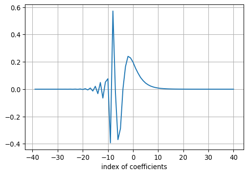
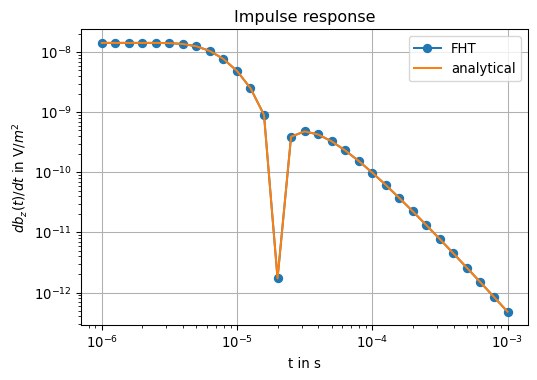

Show the code
nt = 31
t = np.logspace(-6, -3, nt, endpoint=True)
t0 = t[0]
nc = 80
nc0 = 40
ncnt = nc + nt - 1
omega = np.zeros(ncnt, dtype=np.float64)
omega = np.array([10**(0.1 * (nc - nc0 - i)) / t0 for i in range(0, ncnt)])We have already learned that the inverse transform (Fourier synthesis) back to the time domain can be performed using the Laplace transform when the source current in the transmitter dipole is turned on or off. The current waveform can be described mathematically by a Heaviside step function.
Key idea ist the step response.
The step response is the impulse response convolved with the transfer function of the step function. In the frequency domain we realize this by a multiplication of the Fourier transform of the considered field component with the Fourier transform of the step function.
The equation \[ \begin{equation} f(t)=\frac{1}{2 \pi} \int_{-\infty}^{\infty} \frac{F(\omega)}{i \omega} e^{i \omega t} \dd \omega \end{equation} \] describes the relation formally correct, but suffers from a singularity when \(\omega=0\).
Therefore the Fourier transformation is not applicable, since the function \(1/i\omega\) to be transformed is not integrable. However, this deficiency can be solved with a trick.
We will formulate the approach to the inverse Fourier transform a little more elegantly below.
First, we put together some pleasant properties of the function \(f(t)\) we are looking for:
Therefore, as we will see, the inverse transformation can be carried out optionally as a cosine or sine transform of the imaginary or real part of \(\frac{F(\omega)}{\omega}\), respectively:
\[ \begin{equation} \begin{aligned} f(t) &=\frac{2}{\pi} \int_{0}^{\infty} \operatorname{Im} \frac{F(\omega)}{\omega} \cos (\omega t) \dd \omega \\ &=\frac{2}{\pi} \int_{0}^{\infty} \operatorname{Re} \frac{F(\omega)}{\omega} \sin (\omega t) \dd \omega \end{aligned} \end{equation} \]
We note the change of the integration limits (from \(0\) to \(+\infty\)) and the leading factor \(2 / \pi\) instead of \(1 / 2 \pi\) before.
How do we get to this result?
The Heaviside function is denoted by \(H(t)\).
First, we consider the current step-on. It holds \(g(t) =: g_\mathrm{on}(t) = H(t)\).
Using the Fourier transform pair
\[ \begin{equation} f(t)=\frac{1}{2 \pi} \int_{-\infty}^{+\infty} F(\omega) \mathrm{e}^{i \omega t} \dd \omega \end{equation} \]
\[ \begin{equation} F(\omega)=\int_{-\infty}^{+\infty} f(t) \mathrm{e}^{-i \omega t} \dd t \end{equation} \] and a stabilizing term \(e^{-\epsilon t}\), \(\epsilon \to 0^+\), we obtain (Table of Fourier transforms) \[ \begin{equation} \tilde{g}(\omega)=: \tilde{g}_\mathrm{o n}(\omega)=\lim _{\epsilon \rightarrow 0^{+}} \int_{0}^{\infty} e^{-(\epsilon+i \omega) t} \dd t=\lim _{\epsilon \rightarrow 0^{+}} \frac{1}{\epsilon+i \omega}. \end{equation} \] For the current step-off there holds \(g(t) =: g_\mathrm{off}(t) = H(-t)\): \[ \begin{equation} \tilde{g}(\omega)=: \tilde{g}_\mathrm{off}(\omega)=\lim _{\epsilon \rightarrow 0^{+}} \int_{-\infty}^{0} e^{(\epsilon-i \omega) t} \dd t=\lim _{\epsilon \rightarrow 0^{+}} \frac{1}{\epsilon-i \omega}. \end{equation} \] We add both expressions in the frequency domain and obtain \[ \begin{equation} \tilde{g}_\mathrm{o n}(\omega)+\tilde{g}_\mathrm{o f f}(\omega)=\lim _{\epsilon \rightarrow 0^{+}} \frac{2 \epsilon}{\epsilon^{2}+\omega^{2}}=2 \pi \delta(\omega), \end{equation} \] Equivalently, in the time domain \[ \begin{equation} g_\mathrm{o n}(t)+g_\mathrm{o f f}(t) = H(t) + H(-t)=1 \end{equation} \]
We now consider a source term of the form \(\mathbf m(t) = \mathbf m_0 e^{i \omega t}\) (complex-valued single-frequency source). The resulting field is \(F(\mathbf r, \omega) e^{i \omega t}\).
The real-valued field components for the current step-on (\(f_\text{on}\)) and step-off (\(f_\text{off}\)) are \[ \begin{equation} f_\mathrm{o n}(\mathbf{r}, t)=\frac{1}{2 \pi} \int_{-\infty}^{+\infty} \tilde{g}_\mathrm{o n}(\omega) F(\mathbf{r}, \omega) \mathrm{e}^{i \omega t} \dd \omega \end{equation} \] and \[ \begin{equation} f_\mathrm{o f f}(\mathbf{r}, t)=\frac{1}{2 \pi} \int_{-\infty}^{+\infty} \tilde{g}_\mathrm{o f f}(\omega) F(\mathbf{r}, \omega) \mathrm{e}^{i \omega t} \dd \omega. \end{equation} \] Due to causality all field components must be zero for \(t<0\).
Setting \(t' := -t\) we obtain \[ \begin{equation} 0=\frac{1}{2 \pi} \int_{-\infty}^{+\infty} \tilde{g}_\mathrm{o n}(\omega) F(\mathbf{r}, \omega) \mathrm{e}^{-i \omega t'} \dd \omega. \end{equation} \] Multiplying out \(F = real(F) + i\cdot imag(F)\) and \(\mathrm{e}^{-i \omega t'} = \cos(\omega t') - i \sin(\omega t')\) and taking into account that \(f(t)\) is real, we obtain the following result for \(t>0\): \[ \begin{equation} \begin{aligned} f_\mathrm{o n}(\mathbf{r}, t) & = -\frac{2}{\pi} \int_{0}^{\infty} \operatorname{Im}\left[\tilde{g}_{o n}(\omega) F(\mathbf{r}, \omega)\right] \sin (\omega t) d \omega \\ & =\frac{2}{\pi} \int_{0}^{\infty} \operatorname{Re}\frac{F(\omega)}{\omega} \sin (\omega t) d \omega. \end{aligned} \end{equation} \] We have exploited that \[ \begin{equation} \lim _{\epsilon \rightarrow 0^{+}} g_{o n}(\omega) \sin (\omega t)=\frac{\sin (\omega t)}{i \omega} \end{equation} \] is finite for \(\omega \to 0\), such that the stabilizing term \(\epsilon\) is not required.
We follow the basic ideas of the FHT as introduced above where we have considered dipole induction in the frequency domain over a (layered) half-space.
After a substitution of variables, a convolution integral and later a convolution sum with finitely many terms can be established.
Likewise, we make the transformations \[ \begin{equation} \begin{aligned} x & = \log(t / t_0) \\ y & = -\log (\omega t_0), & t_0 > 0 \\ G(x) & = t g(t) \\ F(y) & = f(\omega) \\ H(x) & = e^x J_\nu(e^x). \end{aligned} \end{equation} \]
Which frequencies have to be calculated and how do they depend on the desired time interval?
The following rule applies:
Let \(n_c\) be the number of filter coefficients, \(n_t\) the number of logarithmically equidistant time points \(t_i\), \(i=1,\dots,n_t\).
This gives \(n_c + n_t - 1\) necessary evaluations in the frequency domain.
The location of the required frequencies can be calculated from \(t_i\) if the location of the zero index of the filter coefficients is known.
Let \(n_0\) be the zero index, \(n_c\) the filter length and \(n_t\) the length of the desired time signal, then the following determination equation is valid for the required angular frequencies \[ \begin{equation} \omega_n = \frac{1}{t_0} 10^{(1 - n_0 + n_c - n) / 10}, \qquad n=1,\dots,n_c + n_t - 1 \end{equation} \]
Example
Let \(n_c = 80\), \(n_t = 31\) sampled from the interval \(t_0 = 10^{-6} \le t \le 10^{-3}\) s with 10 log-equidistant samples per decade.
Then \(n_c + n_t - 1 = 110\).
Let’s compute the \(\omega_n\).
nt = 31
t = np.logspace(-6, -3, nt, endpoint=True)
t0 = t[0]
nc = 80
nc0 = 40
ncnt = nc + nt - 1
omega = np.zeros(ncnt, dtype=np.float64)
omega = np.array([10**(0.1 * (nc - nc0 - i)) / t0 for i in range(0, ncnt)])The required 110 frequencies \(f_n = \omega_n / (2 \pi)\) are located between np.float64(0.02) Hz and np.float64(1.592) GHz.
def gethankelfcsin():
fc = np.array([
+2.595262360000e-07, +3.665448430000e-07, +5.178307950000e-07, +7.313406220000e-07,
+1.033228050000e-06, +1.459185000000e-06, +2.061610650000e-06, +2.911377930000e-06,
+4.113578630000e-06, +5.808764200000e-06, +8.207980750000e-06, +1.158950830000e-05,
+1.637785600000e-05, +2.312284590000e-05, +3.268006490000e-05, +4.613293340000e-05,
+6.521010850000e-05, +9.203905750000e-05, +1.301229350000e-04, +1.836204310000e-04,
+2.596566260000e-04, +3.663119820000e-04, +5.181411840000e-04, +7.307173400000e-04,
+1.033921840000e-03, +1.457427140000e-03, +2.062923020000e-03, +2.905999110000e-03,
+4.114719020000e-03, +5.790427630000e-03, +8.200047220000e-03, +1.151929300000e-02,
+1.630391330000e-02, +2.282577570000e-02, +3.222492220000e-02, +4.478643280000e-02,
+6.273296250000e-02, +8.570591000000e-02, +1.174183140000e-01, +1.536326550000e-01,
+1.977179640000e-01, +2.288498490000e-01, +2.403110380000e-01, +1.654092200000e-01,
+2.847014760000e-03, -2.880160570000e-01, -3.690974060000e-01, -2.501075140000e-02,
+5.718112560000e-01, -3.922615720000e-01, +7.632800440000e-02, +5.162339940000e-02,
-6.480120820000e-02, +4.890471410000e-02, -3.269363310000e-02, +2.105398420000e-02,
-1.338625490000e-02, +8.471246950000e-03, -5.351239720000e-03, +3.377966510000e-03,
-2.131744660000e-03, +1.345138330000e-03, -8.487496120000e-04, +5.355310060000e-04,
-3.378987800000e-04, +2.132001090000e-04, -1.345202730000e-04, +8.487657870000e-05,
-5.355350690000e-05, +3.378998010000e-05, -2.132003650000e-05, +1.345203370000e-05,
-8.487659490000e-06, +5.355351100000e-06, -3.378998110000e-06, +2.132003680000e-06,
-1.345203380000e-06, +8.487659510000e-07, -5.355351100000e-07, +3.378998110000e-07
])
nc = 80
nc0 = 40
return fc, nc, nc0We plot of the filter coefficients for \(J_{+1/2}(\omega t)\), i.e., the sine transform:
fc, nc, nc0 = gethankelfcsin()
fig, ax = plt.subplots(1, 1, figsize=(6,4))
ax.plot([nc0 - i for i in range(0, nc)], fc)
ax.set_xlabel('index of coefficients')
ax.grid(True)
In the following we will implement a function for the computation of the step response of a layered halfspace.
To this end, we provide two analytical solutions for the dipole induction in a uniform halfspace in the frequency domain. More precisely,
Bz_analytical() provides all required frequency domain solutions to be used in the sine transform,dBzdt_halfspace() provides an analytical reference solution for the impulse response of a uniform halfspace.def Bz_analytical(r, omega, sigma):
μ = np.pi * 4e-7
k = np.sqrt(-1j * omega * μ * sigma)
B = 9 - (9 + 9 * 1j * k * r - 4 * k**2 * r**2 - 1j * k**3 * r**3) * np.exp(-1j * k * r)
B = B * μ / (2 * np.pi * k**2 * r**5)
return B
from scipy.special import erf
def dBzdt_halfspace(t, r, sigma, m=1.0):
nt = len(t)
hzp = np.zeros(nt)
mu0 = np.pi * 4e-7
for i in range(nt):
theta = np.sqrt(mu0 * sigma / (4 * t[i]))
hzp[i] = -m / (2 * np.pi * sigma * r**5) * (
9 * erf(theta * r) -
2 * theta * r / np.sqrt(np.pi) * (
9 +
6 * theta**2 * r**2 +
4 * theta**4 * r**4
) *
np.exp(-theta**2 * r**2)
)
return hzpWe check our implemention and set
Note that the call of Bz_analytical in the code below may be replaced by a call to any appropriate function which provides the frequency domain field components of any dipole type and orientation.
sigma = 0.01
r = 100.0
Bz_f = [Bz_analytical(r, w, sigma) for w in omega]
dBzdt = convolve(fc, \
np.real(1j * omega * Bz_f / np.sqrt(omega))
) * np.sqrt(2 / np.pi / t)
dBzdt_ana = dBzdt_halfspace(t, r, sigma)Plot of the results
fig, ax = plt.subplots(1, 1, figsize=(6,4))
ax.loglog(t, np.abs(dBzdt), marker='o', label='FHT')
ax.loglog(t, np.abs(dBzdt_ana), label='analytical')
ax.legend()
ax.set_xlabel('t in s')
ax.set_ylabel(r'$db_z(t)/dt$ in V/$m^2$')
ax.set_title('Impulse response')
ax.grid(True)
By visual inspection, there is no substantial problem in our implementation.
The relative numerical error can be evaluated by an appropriate error norm, i.e., \[ \delta = \frac{\left \| \dv{}{t}b_z^{analytical}(t) - \dv{}{t}b_z^{FHT}(t) \right \|_2}{{\left \| \dv{}{t}b_z^{analytical}(t) \right \|_2}} \] which evaluates for our experiment to 9.61e-08.
empymodWith empymod we can model any type of dipole embedded in a layered halfspace and evaluate fields both in frequency and time domain.
We consider the example introduced above and provide the fields with empymod.
import empymod
time = np.logspace(-6, -3, 31)
mu_0 = np.pi * 4e-7
src = [0, 0, 0, 0, 90]
rec = [100, 0, 0.1, 0, 90]
depth = 0
res = [2e14, 100]
eperm = [0, 0]
inp = {
"src": src,
"rec": rec,
"depth": depth,
"res": res,
"freqtime": time,
"verb": 1,
"xdirect": True,
"epermH": eperm,
}
dbz_num = empymod.loop(signal=0, **inp) * mu_0
fig, ax = plt.subplots(1, 1, figsize=(6,4))
ax.loglog(time, np.abs(dbz_num), marker='o', label='empymod')
ax.legend()
ax.set_xlabel('t in s')
ax.set_ylabel(r'$db_z(t)/dt$ in V/$m^2$')
ax.set_title('Impulse response')
ax.grid(True)